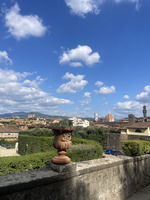
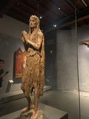
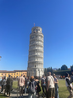

Churches
- Santa Croce: Florence’s Basilica that is dedicated to St. Francis of Assisi. Also hold the graves of Galileo and Michelangelo.
- Santa Maria Novella: Nothing particularly interesting about this church but is beautiful and worth a visit.
- San Lorenzo: The one true Renaissance church in the city center. Uses symmetry and math to create a perfect looking church.
- Duomo: This is the big dome that Florence is known for. It is not as beautiful on the inside as some of the other churches, but I highly recommend climbing it to see the view from the top.
- Duomo Baptistery: This is gorgeous on the inside and often gets overlooked in favor of the Duomo next to it.
Museums
- Accademia Gallery: This is the museum with The David by Michelangelo inside of it. A must visit just to see this statue.
- Uffizi: The most notable piece in here is the Birth of Venus by Botticelli, however there is much more than just that piece. Another must visit museum in Florence.
- Duomo Museum: This was a cool museum that had the original doors to the Baptistery in it. In the same piazza as the Duomo, I would recommend it if you’re already in the area.
- Gucci Museum: This is a super small museum detailing some of the history of Gucci. It has the iconic purse wall in it. Not a must see, but a cool spot.
- Galileo Museum: This was another cool museum, although not really my personal favorite. It had a lot of science stuff, so if you like that I would recommend it.
Day Trips
- Pisa: You maybe need two to three hours here. The only thing to really see is the leaning tower and the church next to it. Cool to see, but generally boring place otherwise.
- Siena: A beautiful Tuscan city about an hour and a half away from Florence. Very unique city layout and no cars allowed in the city center.
- Arezzo: I did not go here, but there is supposed to be a great Christmas market here.
Other
- Piazzale Michelangelo: Super fun piazza that overlooks the city. Sunset is the best time to go because there will be people dancing and music playing. It will be busy, but it is a very fun experience.
- Boboli Gardens and Pitti Palace: This is the old Medici residence. Both are beautiful and you can get a good look over the city from the gardens. I really liked the lemon house in the gardens as well.
- Enoteca: This is more of a general suggestion but go to an enoteca while in Florence. It is like a wine bar, but it is really a unique Italian experience if you go for a wine tasting.


